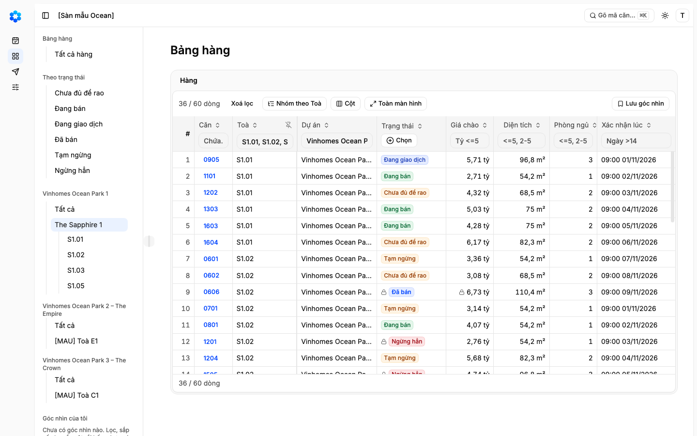
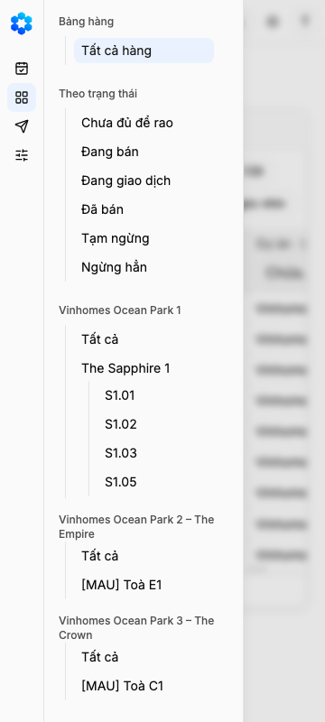
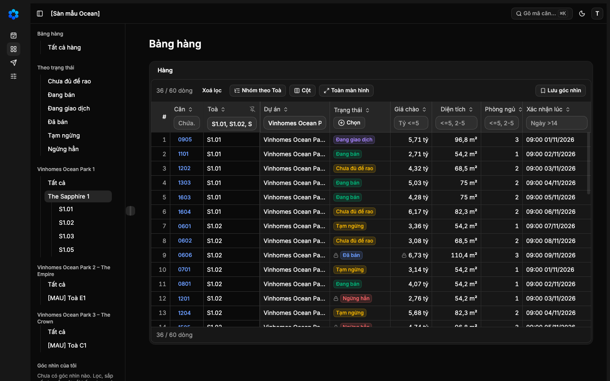
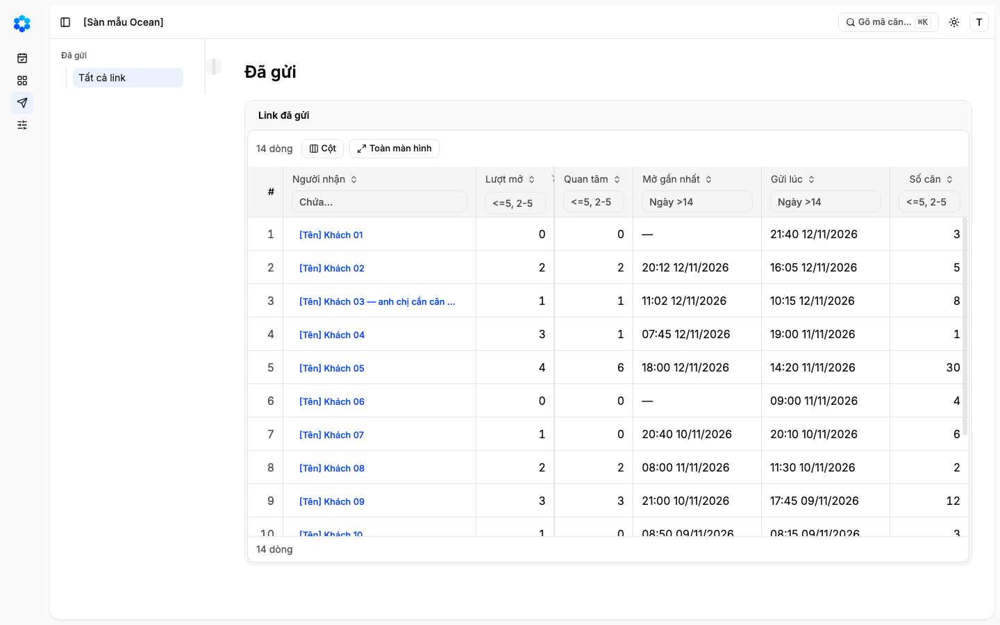
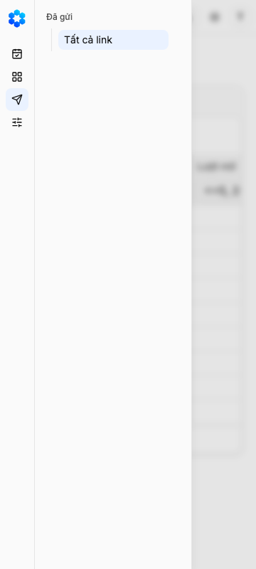
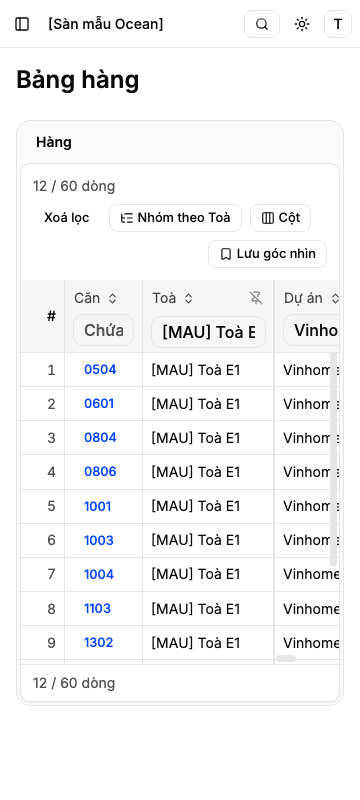
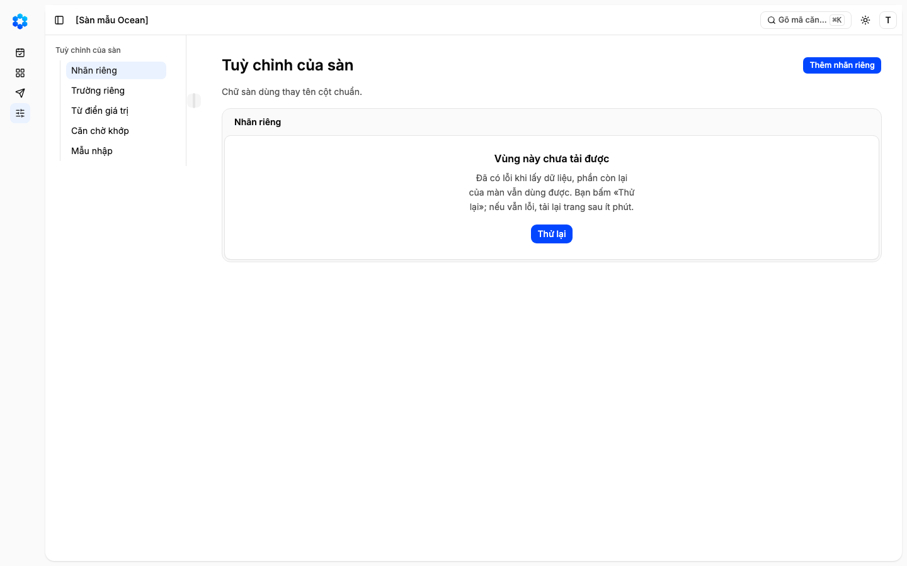
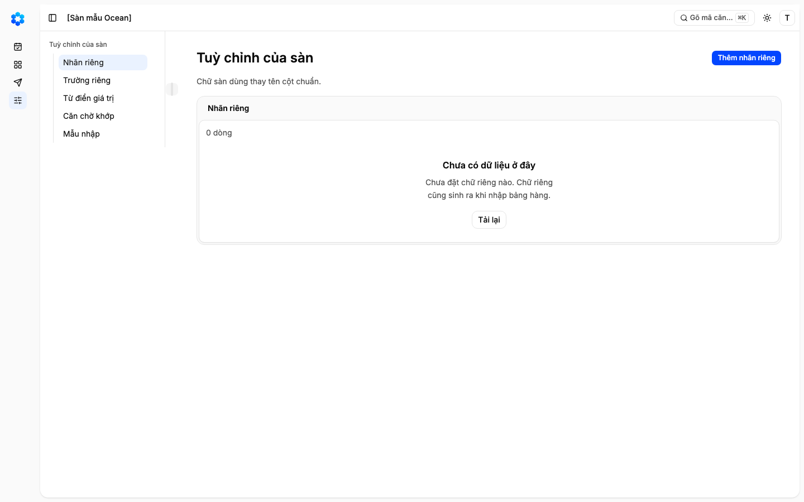
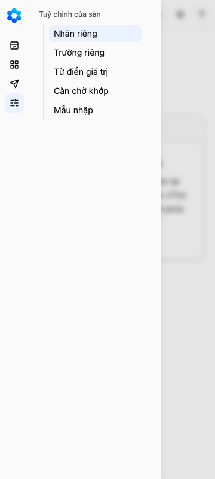

"Đầu chủ đi Bảng hàng theo địa lý: chọn dự án, phân khu, toà ở cột thứ hai của App Shell và lọc các cột địa lý trên bảng"
Vì sao làm
Chủ kho 2026-11-12 nêu lối làm việc theo địa lý trong phiên dãy K: đầu chủ nghĩ theo dự án → phân khu → toà, như mỗi khu một tab ở Sheet. Cần cấp phân khu của hàng 7d
Đã hứa
- AC-1 — (cross-layer) Given Bảng hàng của [Sàn mẫu Ocean] với 60 dòng mẫu, When Đầu chủ đã đăng nhập mở Bảng hàng ở 1440, Then cột thứ hai
- AC-2 — Given cây của AC-1, When Đầu chủ bấm một dự án, một phân khu, hay một toà, Then bảng còn đúng tập dòng của nơi ấy —
- AC-3 — Given một nơi vừa chọn, When nhìn hàng ô lọc dưới tiêu đề, Then ô Dự án GIỮ trọn tên dự án và ô Toà giữ tên toà
- AC-4 — Given bảng đang lọc theo một nơi, When Đầu chủ sửa ô lọc Dự án hay Toà, hay bấm «Xoá lọc», Then cây theo cùng trạng
- AC-5 — Given lọc Trạng thái «Đang bán» đang bật, When Đầu chủ bấm một toà, Then lọc Trạng thái giữ nguyên, chỉ lọc Dự án và
- AC-6 — Given một nơi đang chọn, When Đầu chủ tải lại trang, mở đường dẫn đã chép, hay lưu góc nhìn rồi mở lại góc nhìn ấy,
- AC-7 — Given ô lọc chữ của Bảng hàng (Căn, Toà, Dự án) và của Đã gửi, When người gõ chữ tay, Then lọc vẫn là «chứa chữ, bỏ
- AC-8 — Given điện thoại 414 và 360, When Đầu chủ mở ngăn App Shell, Then cây nằm trong ngăn dưới «Theo trạng thái», bấm một
- AC-9 — Given Bảng hàng có cây ở 1440 và 360, sáng và tối, When chạy bài trợ năng axe và đi bằng phím, Then không vi phạm
- AC-10 — Given các màn khác dùng cột thứ hai của App Shell (Đã gửi; Tuỳ chỉnh của sàn khi hàng 7e đã gộp), When mở các màn ấy
Thiết kế
_acceptance/bang-hang-theo-dia-ly/design.md
Quyết định
- 2026-11-14 · Máy · approach · S1 — Nạp 3 luật sản phẩm từ PRODUCT-INVARIANTS.mdKho đã khai tệp luật sản phẩm — bước thiết kế đọc nó trước khi chọn.
- 2026-11-14 · Máy · approach · S1 — Đã tra tri thức: Đầu chủ đi Bảng hàng theo địa lý: chọn dự án, phân khu, toà ở cột thứ hai của App Shell và lọc các cột địa lý trên bảngKho đã khai tri_thuc — bước thiết kế tra trang trước khi chọn.
- 2026-11-14 · Máy · approach · S1 — Cây và số căn dựng từ chính các dòng Bảng hàng đang có và chỗ đứng của toà trong danh mục căn; không thêm cách đọc dữ liệu nào.Luật SP-1: mọi truy vấn đi qua một cửa; cây đọc lại đúng dòng bảng đã đọc nên số trên cây và số dòng của bảng là một nguồn.
- 2026-11-14 · Máy · approach · S1 — Chọn một nơi trên cây điền ô lọc cột Dự án và cột Toà bằng tên trọn vẹn (khớp đúng tên); ô lọc gõ tay vẫn là «chứa chữ» như cũ.Lọc chứa chữ không diễn được «một phân khu gồm nhiều toà» và để «Park 1» lấy cả «Park 10»; luật lọc chung chỉ THÊM kiểu khớp trọn cho danh sách tên (G-1411-79).
- 2026-11-14 · Máy · approach · S1 — Cây và ô lọc cột địa lý là một trạng thái lọc: chọn nơi trên cây thì ô lọc hiện đúng tên; sửa ô lọc thì cây sáng đúng nơi trùng, không trùng nơi nào thì không nút nào sáng; góc nhìn đã lưu giữ lựa chọn địa lý vì nó là lọc cột.Ô cơ hội đã ký đòi «lọc cột địa lý trên bảng và cây ở cột thứ hai luôn khớp nhau».
- 2026-11-14 · Máy · descope · S1 — Không thêm cột Phân khu vào Bảng hàng; chọn một phân khu thì cột Toà lọc đúng các toà của phân khu ấy.Bảng hàng giữ tám cột đã ký ở hàng 2 và bài «vừa 8 cột ở 1440» của 2e.
- 2026-11-14 · Máy · descope · S1 — Cây dừng ở cấp toà; tầng và trục không vào cây (lọc tầng vẫn bằng mã căn).Câu giao của hàng 2d chỉ nêu dự án, phân khu, toà; mỗi toà mười mấy tầng sẽ làm cây dài gấp nhiều lần.
- 2026-11-14 · Máy · descope · S1 — Nợ cột «Căn» cắt mã căn không làm trong 2d: trên nhánh chính f905ded (sau 3a và 2e) mã căn hiện trọn ở 1440 và 1024 khi hồ sơ mở; ảnh kèm trên trang cổng.Lời giao: kiểm trên nhánh chính sau 3a và 2e, còn thì làm trong hàng này; đã kiểm, không còn.
- 2026-11-14 · Máy · approach · S1 — Hỏi-1 · Dáng cây ở cột thứ hai: khuyên B — mỗi dự án một nhóm của cột như một tab Sheet, phân khu và toà là mục con cùng kiểu với mọi mục khác của cột, số căn trong nhãn tròn.Chủ kho đã chốt ở hàng 2c «cả cột thứ hai một kiểu mục»; B dựng từ chính các mục của cột (bậc 1 của quyết định 0023), A và C là khối Cây của ReUI, một kiểu mục khác.
- 2026-11-14 · Máy · approach · S1 — Hỏi-2 · Bấm một nơi trên cây giữ các lọc khác đang bật (trạng thái, giá, diện tích…) và chỉ thay lọc Dự án, Toà; khuyên giữ.Như ở Sheet: đổi tab theo khu không xoá lọc cột khác; lối tắt trạng thái hiện mở bảng sạch nên đây là một chọn về nghĩa.
- 2026-11-14 · Máy · approach · S1 — Hỏi-3 · Số căn trên cây đếm theo các lọc khác đang bật (vd chỉ «Đang bán»), không đếm tổng; khuyên đếm theo lọc đang bật.Đi kèm Hỏi-2: số trên nút phải bằng số dòng bảng hiện ra khi bấm nút ấy.
- 2026-11-14 · Máy · approach · S1 — Chạy nghi thức design-pass: bản bấm được trên màn Bảng hàng thật trong App Shell thật, vai Đầu chủ đã đăng nhập của [Sàn mẫu Ocean], ba lối chụp so ngang ở 1440 nền sáng, kèm ảnh nhiều toà và điện thoại cho cả ba.Luật mười điểm của đợt và quyết định 0023: Cổng Phạm vi duyệt trên ảnh của thứ sẽ dựng, đúng chỗ, có ảnh khối gốc.
- 2026-11-14 · Máy · descope · S1 — bỏ coverage-scan — không gian khép bởi ba trục viết sẵn (cấp nơi × kiểu đứng, hai chiều của một trạng thái, khổ × trợ năng); đổi lại không có bằng chứng độ phủHàng có một màn, ba cấp nơi đã liệt đủ theo danh mục 7d; các trục ghi ở mục Coverage của hợp đồng.
- 2026-11-14 · Máy · descope · S1 — bỏ đường-đo — chủ kho dời nghiệm thu giá trị tới cuối lộ trình MVP; ngưỡng của ô cơ hội chính là các tiêu chíBộ nhớ chủ kho «Không UAT từng hàng»; ô cơ hội chỉ có ngưỡng đề xuất trùng câu bật.
- 2026-11-14 · Máy · approach · S1 — Cây và số căn dựng từ chính các dòng Bảng hàng đang có và chỗ đứng của toà trong danh mục căn mẫu mà các dòng ấy đã dùng; không thêm truy vấn hay lần đọc nào; bài đo quét các tệp cây đi qua theo dấu hiệu SP-1.Số trên nút và số dòng của bảng phải chung một nguồn (AC-2, AC-5); một lần đọc thứ hai sẽ lệch nguồn và thêm một đường phải giữ cách ly (SP-1).
- 2026-11-14 · Máy · fix · S1 — Sau phản biện: nút sáng khi và chỉ khi tập dòng lọc ra bằng tập dòng của nơi (chữ gõ tay cũng vậy); số căn không tính chính lọc địa lý, nơi 0 vẫn hiện; sàn rỗng có câu riêng; AC-10 có ảnh trước/sau của Đã gửi và Tuỳ chỉnh của sàn ở hai khổ.gap-probe.md: bốn P1 và một P2 — chữ gõ «Park 1» có thể làm sáng nơi mà bảng hiện cả «Park 10»; đếm theo cả lọc địa lý làm các nơi khác biến mất.
- 2026-11-14 · Máy · approach · S1 — Hỏi-1 · Dáng cây ở cột thứ hai: khuyên A — khối Cây của ReUI, chỉ mở nhánh đang chọn, số căn mờ cuối dòng, tên dài xuống dòng; lối khác C — cùng khối, có ô chọn nhiều toà. Lối B (mục con gốc của cột) rút: dựng đúng luật kho thì tên bị cắt còn «S..», «Vinhomes Oc…».Luật lint của kho cấm đặt lớp chiều cao, chữ lên mục gốc của thanh bên; ở bề rộng cột hiện tại mục con lồng hai cấp chỉ còn chừng mười chữ — ảnh b-phan-khu-cot.png.
- 2026-11-14 · Máy · approach · S1 — Hỏi-1 · Dáng cây ở cột thứ hai: khuyên D — cùng UI với «Bảng hàng» và «Theo trạng thái»: mỗi dự án một nhóm có tiêu đề là tên dự án, phân khu và toà là mục con của cột, số căn đứng cuối mục, chỉ phân khu lồng toà một cấp; lối khác A (cây gập ReUI) và C (cây có ô chọn).Chủ kho hỏi ở Cổng Phạm vi (2026-11-14) có nên đồng nhất UI của «theo địa lý» với Bảng hàng và trạng thái; đưa tên dự án lên tiêu đề nhóm thì mục con chỉ lồng một cấp, tên đọc trọn mà không nắn mục gốc (ảnh d-phan-khu-cot.png).
- 2026-11-14 · Người (Manh Phan) · descope · gate1 — Cột thứ hai không hiện số căn ở các nơi của cây, cho đồng nhất với «Bảng hàng» và «Theo trạng thái»; số căn của nơi đang chọn đọc ở chân bảng «x / 60 dòng». Hỏi-3 (đếm thế nào) rút vì không còn số.người chọn ở Cổng Phạm vi: Tôi nghĩ bỏ số đếm ở cột số 2 cho đồng nhất?
- 2026-11-14 · Máy · descope · gate1 — KHÔNG làm gập nhóm dự án trong hàng này: với lối D, ở 1440×900 nhóm địa lý vừa chừng 15 dòng dưới «Theo trạng thái» — khoảng 3 dự án và 8 toà —, nhiều hơn thì cột thứ hai cuộn; gập nhóm để cho sau, chỉ làm khi chủ kho đòi.Giám sát G-1411-85: ghi điều mất của D và ngưỡng cuộn, để mở việc gập nhóm cho sau; đo trên ảnh d-phan-khu-1440-sang.png (nhóm bắt đầu ở 399 px, mỗi dòng 32 px).
- 2026-11-14 · Người (Manh Phan) · approach · gate1 — Chủ kho duyệt Cổng Phạm vi theo khuyến nghị: Hỏi-1 lối D (cùng kiểu mục với cả cột thứ hai, không số), Hỏi-2 giữ các lọc khác khi bấm một nơi.người chọn ở Cổng Phạm vi: /acceptance-gate:approve bang-hang-theo-dia-ly duyệt
- 2026-11-14 · Người · seal · gate1 —
- 2026-11-14 · Máy · fix · S2 — Đường nền đỏ một chân (bộ kiểm chung, bước định dạng) chỉ vì tệp cấu hình bản dev riêng của dãy K (.claude/launch.json, không commit) chưa định dạng; đã định dạng lại. Bộ trình duyệt của đường nền: 1123 đạt, 0 trượt.duong-nen.md dòng đỏ 'DO SAN executors.script.check ma 2'; nhật ký: prettier cảnh báo đúng một tệp .claude/launch.json.
- 2026-11-14 · Máy · fix · S4-r1 — Lượt chấm 1 chạy với tệp args do s4-args.mjs sinh, chỉ đổi một trường: địa chỉ bản dev cho người chấm giao diện là cổng 3481 của dãy K thay cho 3470 của cấu hình chung; tệp args được nhúng vào bản sao kịch bản chấm vì công cụ không đọc args từ tệp.Lời giao của G và bước E14 cùng chỉ cổng 3481; cổng 3470 là bản dev chung, có thể đang chạy mã của dãy khác.
- 2026-11-14 · Máy · revisit · S4-r1 — Sửa sau Cổng Phạm vi, chờ chủ kho phê: AC-3 đọc lại — ô lọc Dự án, Toà giữ trọn tên nơi đang chọn (không viết tắt, đọc được trọn khi rê hay focus), chỗ hiện trọn tên bằng mắt là mục đang sáng ở cột thứ hai; giữ luật bề rộng cột. Thêm phép đo: tên đọc được của ô lọc bằng trọn tên nơi (E5, E9).Lượt 1 trượt E14 vì ô lọc hẹp cắt tên; bề rộng cột là luật đóng ở design/behaviors.md và chính ô dữ liệu cũng cắt; G chọn giữ luật (trả lời K-1411-35). Khối TruncatedText bọc chữ trong span và Input giữ kiểu chữ của nó, nên ô lọc theo luật của khối (rê, focus, trình đọc màn hình) mà không có dấu «…».
Bằng chứng
Các eval
| Eval | Tiêu chí | Loại | Verdict | run_id | verified_at |
|---|---|---|---|---|---|
| E1 | AC-1 | test | PASS | minted-bang-hang-theo-dia-ly-E1-r1 | 2026-11-14T17:19:00Z |
| E2 | AC-1 | test | PASS | minted-bang-hang-theo-dia-ly-E2-r1 | 2026-11-14T17:19:00Z |
| E3 | AC-2 | test | PASS | minted-bang-hang-theo-dia-ly-E3-r2 | 2026-11-14T17:36:18Z |
| E4 | AC-2 | script | PASS | minted-bang-hang-theo-dia-ly-E4-r2 | 2026-11-14T17:36:18Z |
| E5 | AC-3 | test | PASS | minted-bang-hang-theo-dia-ly-E5-r2 | 2026-11-14T17:36:18Z |
| E6 | AC-4 | test | PASS | minted-bang-hang-theo-dia-ly-E6-r2 | 2026-11-14T17:36:18Z |
| E7 | AC-4 | script | PASS | minted-bang-hang-theo-dia-ly-E7-r2 | 2026-11-14T17:36:18Z |
| E8 | AC-5 | script | PASS | minted-bang-hang-theo-dia-ly-E8-r2 | 2026-11-14T17:36:18Z |
| E9 | AC-6 | script | PASS | minted-bang-hang-theo-dia-ly-E9-r2 | 2026-11-14T17:36:18Z |
| E10 | AC-7 | test | PASS | minted-bang-hang-theo-dia-ly-E10-r2 | 2026-11-14T17:36:18Z |
| E11 | AC-8 | script | PASS | minted-bang-hang-theo-dia-ly-E11-r2 | 2026-11-14T17:36:18Z |
| E12 | AC-9 | script | PASS | minted-bang-hang-theo-dia-ly-E12-r2 | 2026-11-14T17:36:18Z |
| E13 | AC-10 | test | PASS | minted-bang-hang-theo-dia-ly-E13-r1 | 2026-11-14T17:19:00Z |
| E14 | AC-10 | ui-check | PASS | minted-bang-hang-theo-dia-ly-E14-r2 | 2026-11-14T17:36:18Z |
| E15 | AC-2 | script | PASS | minted-bang-hang-theo-dia-ly-E15-r1 | 2026-11-14T17:19:00Z |
Chi tiết từng eval
PASS E1 · test
AC-1: (cross-layer) Given Bảng hàng của [Sàn mẫu Ocean] với 60 dòng mẫu, When Đầu chủ đã đăng nhập mở Bảng hàng ở 1440, Then cột thứ hai
PASS E2 · test
AC-1: (cross-layer) Given Bảng hàng của [Sàn mẫu Ocean] với 60 dòng mẫu, When Đầu chủ đã đăng nhập mở Bảng hàng ở 1440, Then cột thứ hai
PASS E3 · test
AC-2: Given cây của AC-1, When Đầu chủ bấm một dự án, một phân khu, hay một toà, Then bảng còn đúng tập dòng của nơi ấy —
npx vitest run src/modules/listings/ui/geo-tree.test.ts tests/dia-ly.test.tsx --coverage.enabled=false --reporter=verbose (chung mot lenh voi E5, E6; ket thuc sach)
PASS E4 · script
AC-2: Given cây của AC-1, When Đầu chủ bấm một dự án, một phân khu, hay một toà, Then bảng còn đúng tập dòng của nơi ấy —
playwright -c playwright.db.config.ts tests/e2e-db/dia-ly.spec.ts 11 passed (43.0s)
PASS E5 · test
AC-3: Given một nơi vừa chọn, When nhìn hàng ô lọc dưới tiêu đề, Then ô Dự án GIỮ trọn tên dự án và ô Toà giữ tên toà
chung mot lenh vitest voi E3, E6; ket thuc sach
PASS E6 · test
AC-4: Given bảng đang lọc theo một nơi, When Đầu chủ sửa ô lọc Dự án hay Toà, hay bấm «Xoá lọc», Then cây theo cùng trạng
chung mot lenh vitest voi E3, E5; ket thuc sach
PASS E7 · script
AC-4: Given bảng đang lọc theo một nơi, When Đầu chủ sửa ô lọc Dự án hay Toà, hay bấm «Xoá lọc», Then cây theo cùng trạng
chung mot lenh playwright voi E4; 11 passed (43.0s)
PASS E8 · script
AC-5: Given lọc Trạng thái «Đang bán» đang bật, When Đầu chủ bấm một toà, Then lọc Trạng thái giữ nguyên, chỉ lọc Dự án và
chung mot lenh playwright voi E4; 11 passed (43.0s)
PASS E9 · script
AC-6: Given một nơi đang chọn, When Đầu chủ tải lại trang, mở đường dẫn đã chép, hay lưu góc nhìn rồi mở lại góc nhìn ấy,
chung mot lenh playwright voi E4; 11 passed (43.0s)
PASS E10 · test
AC-7: Given ô lọc chữ của Bảng hàng (Căn, Toà, Dự án) và của Đã gửi, When người gõ chữ tay, Then lọc vẫn là «chứa chữ, bỏ
make test; ket thuc sach
PASS E11 · script
AC-8: Given điện thoại 414 và 360, When Đầu chủ mở ngăn App Shell, Then cây nằm trong ngăn dưới «Theo trạng thái», bấm một
chung mot lenh playwright voi E4; 11 passed (43.0s)
PASS E12 · script
AC-9: Given Bảng hàng có cây ở 1440 và 360, sáng và tối, When chạy bài trợ năng axe và đi bằng phím, Then không vi phạm
chung mot lenh playwright voi E4; 11 passed (43.0s)
PASS E13 · test
AC-10: Given các màn khác dùng cột thứ hai của App Shell (Đã gửi; Tuỳ chỉnh của sàn khi hàng 7e đã gộp), When mở các màn ấy
PASS E14 · ui-check
AC-10: Given các màn khác dùng cột thứ hai của App Shell (Đã gửi; Tuỳ chỉnh của sàn khi hàng 7e đã gộp), When mở các màn ấy












PASS E15 · script
AC-2: Given cây của AC-1, When Đầu chủ bấm một dự án, một phân khu, hay một toà, Then bảng còn đúng tập dòng của nơi ấy —
Eval không phân biệt (Analyst)
Vòng verify
- Round 1: E14 (ui-check) did not pass — the second-column frames did not match the Expected text. Returned to implementation.
- Round 2: E3, E4, E5, E6, E7, E8, E9, E10, E11, E12, E14 re-run and passed; E1, E2, E13, E15 carried forward from round 1 (delta did not touch their paths). Verdict PASS.
Tài nguyên
| Khối | Tác tử | Token đầu ra |
|---|
0 lượt chấm · tổng 0 token
Giới hạn và ngoài hợp đồng
- Cột Phân khu trên Bảng hàng: không thêm (giữ tám cột của hàng 2); phân khu lọc qua cột Toà.
- Cấp tầng và trục trong cây: không làm; lọc tầng bằng ô lọc Căn.
- Ô «Gõ để tìm» trong cây hay trong vùng: không (2e); tìm ở ⌘K (3f).
- Nợ cột «Căn» cắt mã căn: đã hết trên nhánh chính sau 3a và 2e (ảnh trên trang cổng), không làm ở đây.
- Cây trên màn khác ngoài Bảng hàng (Đã gửi, Liên hệ): không.
- Số căn trên các mục của cây: không — chủ kho bỏ cho đồng nhất cột thứ hai; số của nơi đang chọn đọc ở chân bảng.
- Gập nhóm dự án: không. Ở 1440×900 nhóm địa lý vừa chừng 15 dòng (khoảng 3 dự án và 8 toà), nhiều hơn thì cột thứ hai cuộn; gập nhóm để cho sau, chỉ làm khi chủ kho đòi.
Giao
chưa ghi quan sát production
Giá trị
- Câu hỏi phép đo trả lời: [đề xuất] đã đạt «Cột thứ hai hiện cây dự án → phân khu → toà kèm số căn; chọn một nút thì bảng lọc đúng tập căn và nút sáng lên; lọc cột địa lý trên bảng và cây ở cột thứ hai luôn khớp nhau; thẻ Phạm vi bày ứng viên ReUI cho cây kèm ảnh theo quyết định 0023» chưa? — chưa đo
- Kết quả nào là SỐNG: [đề xuất] Cột thứ hai hiện cây dự án → phân khu → toà kèm số căn; chọn một nút thì bảng lọc đúng tập căn và nút sáng lên; lọc cột địa lý trên bảng và cây ở cột thứ hai luôn khớp nhau; thẻ Phạm vi bày ứng viên ReUI cho cây kèm ảnh theo quyết định 0023 — chưa đo
- Kết quả nào là CHẾT: [đề xuất] chưa đạt «Cột thứ hai hiện cây dự án → phân khu → toà kèm số căn; chọn một nút thì bảng lọc đúng tập căn và nút sáng lên; lọc cột địa lý trên bảng và cây ở cột thứ hai luôn khớp nhau; thẻ Phạm vi bày ứng viên ReUI cho cây kèm ảnh theo quyết định 0023» khi hết timebox — chưa đo
- Timebox: … — chưa đo